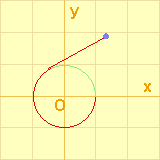

|
Given a thread with the length 2Ɍ.
It winds clockwise around a circle with radius 1, and center at the origin. The end points of the thread are placed at (1,0). ɶ is the length of thread off the circumference while the final end point is pulled and then thread tightly winds off counterclockwise, where the initial end point is fixed. |
Explore with Applet.Start with prob.1 !ÅiClick thisÅj |  |